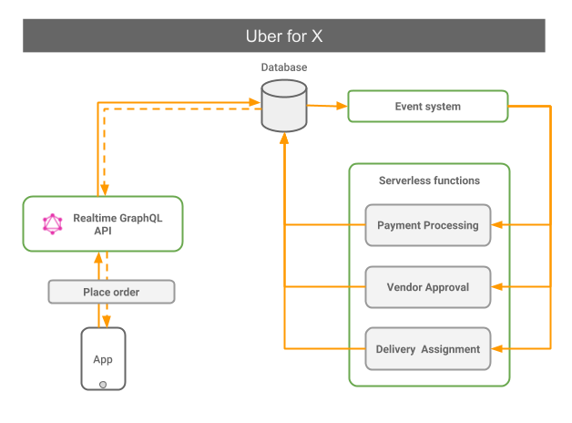
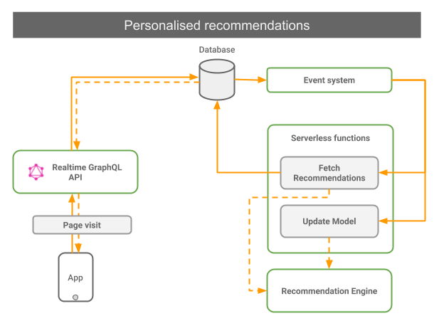
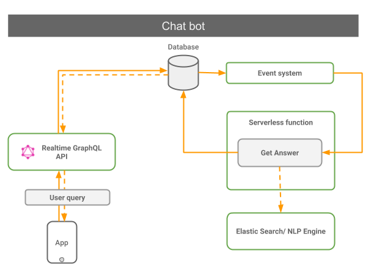
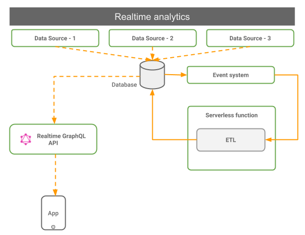

3factor design is suited for a wide variety of apps. Infact, every app can benefit from 3factor principles. Although sometimes it may be more complicated than required for certain apps therefore it is best to do some fundamental analysis before starting development in 3factor style.
The following examples will illustrate few of the use-cases where 3factor really shines:

Uber for X apps are apps in which you can order something and track the delivery of the order. These kind of apps involve designing complex workflows with multiple steps, for instance:
Uber for X apps are highly asynchronous and microservices-oriented as each step in the workflow is managed by a dedicated module. 3factor design is perfect for this use-case because you can design this system such that the steps are represented by events and each module is triggered by an event. The frontend can subscribe to new events via realtime GraphQL and update the UI accordingly. Any intermittent failures can be retried (by the eventing system) without affecting the consumer experience.

In an e-commerce website, you will want to show recommendations for products based on a user's recent catalog browsing. This will involve sending product-visit information to a machine learning service which returns a list of relevant products.
Recommendation/Machine learning systems can be large & complex and hence have unexpected response times. Therefore, relying on a synchronous process to get personalised recommendations can be too error-prone. With 3factor design, you can make the whole process reliable and fast. You can emit an event on each page visit which will trigger 2 serverless functions: one for fetching the current recommendations and other for updating the recommendation engine model. You can display the new recommendations as soon as the results are generated via realtime GraphQL.

Chat bots are a very popular way for enhancing customer interaction experience in your app. A typical chat bot application involves receiving a user query, analysing it and generating a valid response in near realtime.
In traditional approaches, you may design a REST endpoint which takes the query string and returns the response. Clearly, there are multiple problems with this approach: 1) you may fail mid-way and unable to generate a response, 2) you may be blocked on a sync call and hence unable to process new queries, 3) you might have performance issues during high volume of queries. 3factor design can solve all of these problems by virtue of the event-driven, realtime and serverless architecture.

Realtime analytics like live dashboards/views are very useful in analysing information and responding quickly to important events. In such apps you need to continuously capture relevant data, perform an extract-transform-load (ETL) and finally, query a view.
The crucial component of such apps is to not miss any data and display the new view as soon as it is updated. 3factor requires that your event system is reliable i.e. by persisting events and guaranteeing atleast-once delivery. Each event can trigger a serverless functions which does the ETL (thereby updating any views which depend on it) and the frontend can subscribe to the required views via realtime GraphQL.